Disparity generalizes better than depth
Under matched geometry-only training, disparity supervision generalizes better to unseen scenes than direct depth supervision.
+29.03 ppDepth δ₁ on unseen scenes · 45.89% → 74.92%
Generalization study
Vision-language models exhibit strong semantic understanding but remain limited in metric 3D spatial reasoning. We introduce StereoVLM, a geometry-aware binocular vision-language model that learns from calibrated stereo observations through hierarchical supervision, spanning cross-view correspondence and disparity, calibration-conditioned metric depth, and semantic spatial reasoning. We also introduce Stereo3D-Bench, which evaluates eight tasks from point-level geometry to object-level spatial reasoning.
StereoVLM-8B achieves 95.17% depth accuracy (δ₁) and a 66.98 object-level average. Disparity supervision improves depth generalization to unseen environments, while controlled interventions verify the importance of valid cross-view geometry. Stereo instruction tuning further yields average gains of 3.54 points across five spatial benchmarks and 4.3 percentage points in RoboCasa manipulation success.
Under matched geometry-only training, disparity supervision generalizes better to unseen scenes than direct depth supervision.
StereoVLM-8B outperforms GPT-6 Astra across five object-level tasks on Stereo3D-Bench through binocular 3D reasoning.
Stereo instruction tuning improves RoboCasa manipulation under the same GR00T architecture and stereo-input setting.
The main split spans DROID, Xperience-10M, FSD, and RoboCasa. An additional in-house split evaluates geometric generalization to unseen environments.

Construction and task hierarchy of Stereo3D-Bench. (a) The main split is constructed from four stereo data sources. Independently selected point- and object-level subsets contain 2,017 and 1,556 stereo pairs, respectively, yielding 94,546 question–answer instances. (b) Representative queries and answer formats for eight tasks spanning point-level geometry, object-level geometry, and object-level spatial reasoning.
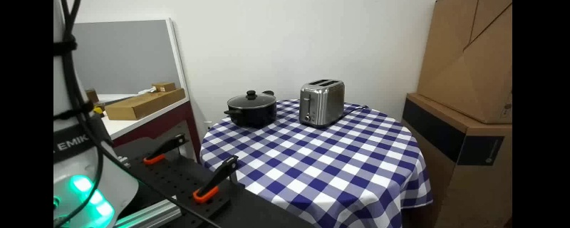
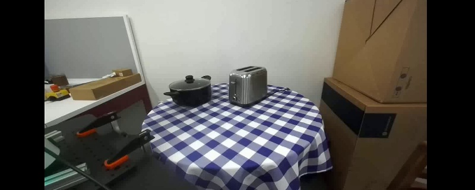
Binocular evidence. DROID stereo observations and reconstructed 3D geometry. Drag to rotate, or switch between depth and RGB.
Recover cross-view correspondence, disparity, and metric depth from queried image coordinates.
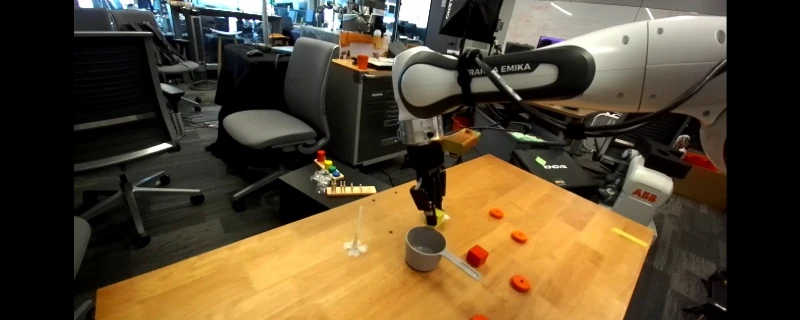
LEFT IMAGE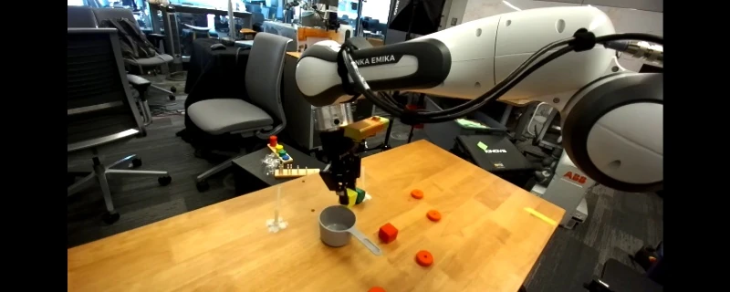
RIGHT IMAGEFor the highlighted point (329, 243) in the left image, where is the corresponding point in the right image?
Source: DROID · droid_val_ep000064_ext1_f000350.
Use an object description to query correspondence, disparity, and depth at the object level.
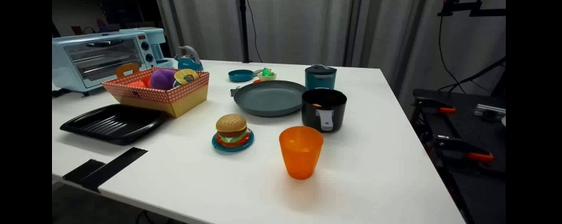
LEFT IMAGE · QUERY OBJECT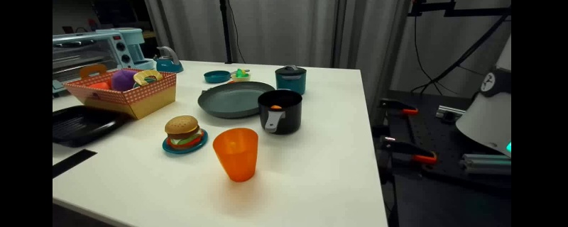
RIGHT IMAGE · SAME OBJECTIn the left stereo image, identify the orange plastic cup. Then locate the same physical object in the right stereo image and return its bounding box. Answer with the right-image bounding box only.
Source: DROID · ep031997_ext1_f000000.
Localize a language-referred object in 3D, or identify and ground the object required by a manipulation task.
Rectified-left camera calibration: fx=267, fy=267 pixels; baseline=0.120044 meters. The principal point is at the image center. Provide the 3D OBB for the silver toaster in the left stereo image. Answer with the 3D bounding box and object label only.
[
{
"bbox_3d": [
0.185009,
-0.047659,
0.887993,
0.222496,
0.104405,
0.174517,
2.986158,
-1.993758,
0.267478,
267.0,
0.0,
400.0,
0.0,
267.0,
160.0
],
"label": "toaster"
}
]Source: DROID · ep048213_ext1_f000000.
StereoVLM adapts Qwen3-VL-Instruct to jointly process an ordered stereo pair and a textual query, generating answers autoregressively. Focal length fx and baseline B are supplied for metric reasoning. Hierarchical instruction supervision connects cross-view correspondence and disparity to calibrated metric depth, then extends these geometric relationships to language-referred objects and task-relevant 3D grounding.

StereoVLM architecture and instruction tuning. StereoVLM jointly processes an ordered stereo pair and a textual query to generate answers autoregressively, with focal length fx and baseline B provided for metric reasoning. Full-parameter instruction tuning interleaves point-level stereo instructions (15%), object-level stereo instructions (10%), and general monocular and video instructions (75%). The SFT loss is applied only to answer tokens.
Focal length and baseline connect disparity to metric depth: Z = fxB / d.
Point-level geometry, object-level geometry, and semantic spatial reasoning are trained jointly.
15% point-level stereo, 10% object-level stereo, and 75% general monocular and video instructions.
We evaluate general-purpose VLMs, monocular depth VLMs, and StereoVLM on Stereo3D-Bench. StereoVLM-8B achieves 95.17% depth δ₁ and a 66.98 object-level average on the main split.
General-purpose VLMs and StereoVLM use stereo pairs; monocular depth VLMs use the left image.
Scroll to view all metrics →
| Model | Point-level geometry | Object-level tasks | |||||||
|---|---|---|---|---|---|---|---|---|---|
| Corr.MAE ↓ | Disp.MAE ↓ | Depthδ₁ ↑ | AverageScore ↑ | Corr.mIoU ↑ | Disp.Acc@2px ↑ | Depthδ₁ ↑ | 3D boxmIoU ↑ | TargetJoint@0.25 ↑ | |
| General-purpose VLMs · stereo input | |||||||||
| Qwen3-VL-2B | 73.37 | 66.92 | 16.11 | 7.17 | 22.89 | 0.62 | 12.32 | 0.00 | 0.00 |
| Qwen3-VL-8B | 46.87 | 41.25 | 21.47 | 9.12 | 24.14 | 1.23 | 20.11 | 0.12 | 0.00 |
| GPT-5.6 Sol | 28.03 | 26.36 | 17.67 | 9.54 | 27.83 | 7.79 | 11.75 | 0.34 | 0.00 |
| GPT-6 Astra | 9.27 | 7.55 | 75.96 | 47.61 | 68.88 | 45.05 | 93.40 | 17.92 | 12.82 |
| Monocular depth VLMs · left image only | |||||||||
| DepthLM-13B | — | — | 28.40 | — | — | — | — | — | — |
| DepthVLM-4B | — | — | 37.11 | 14.35 | 20.07 | 0.69 | 50.44 | 0.53 | 0.00 |
| StereoVLM · stereo input | |||||||||
| StereoVLM-2B Ours | 4.09 | 4.12 | 94.51 | 64.43 | 86.06 | 53.92 | 97.39 | 36.06 | 48.72 |
| StereoVLM-8B Ours | 3.80 | 3.76 | 95.17 | 66.98 | 87.62 | 60.52 | 97.76 | 37.70 | 51.28 |
Correspondence and disparity MAE are in pixels; other metrics are percentage scores. “—” denotes an unsupported task. The object-level average is the unweighted mean of the five object-level tasks. See the paper for scoring details and output validity treatment.
The quantitative results are complemented by depth visualizations on representative DROID and Xperience-10M scenes. Compared with DepthVLM-4B and DepthLM-13B, StereoVLM-2B better preserves scene structure, object boundaries, and foreground geometry, despite its smaller model size.
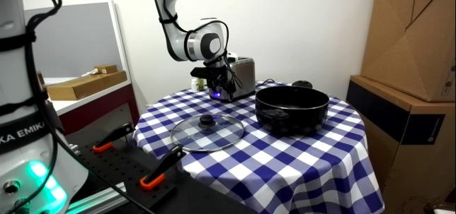
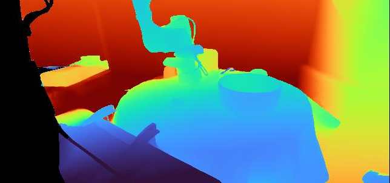
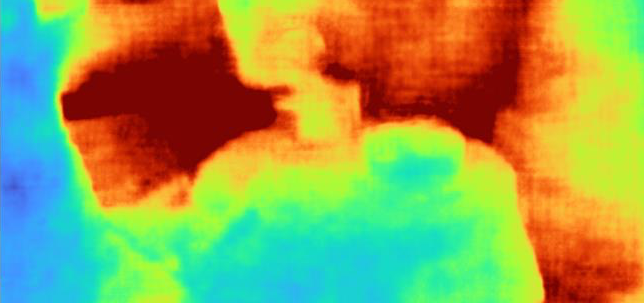
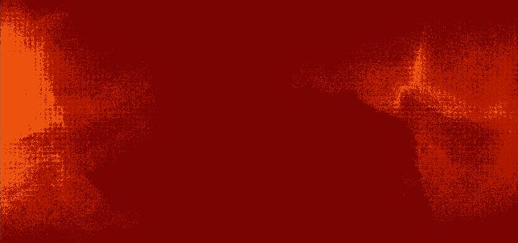
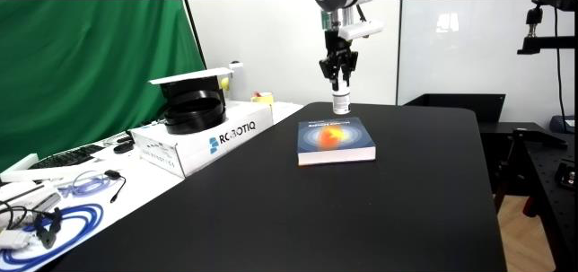
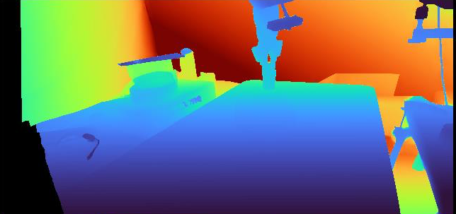
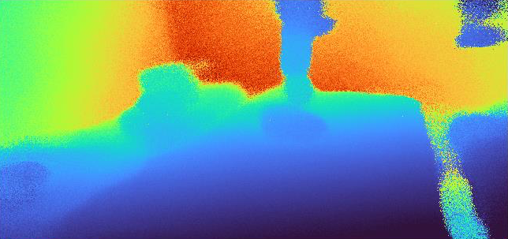
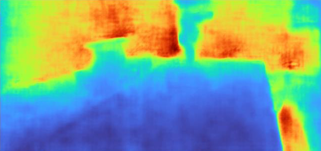
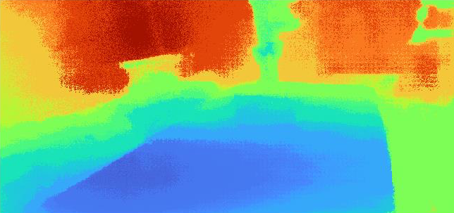
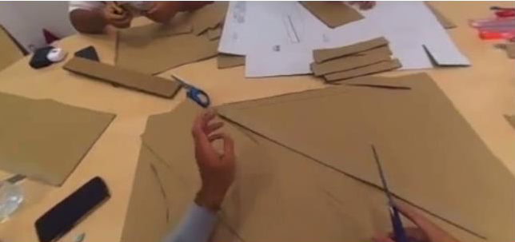
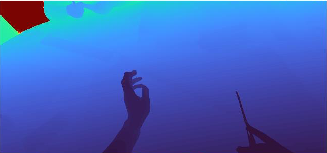
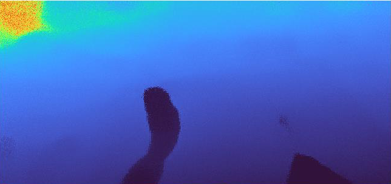
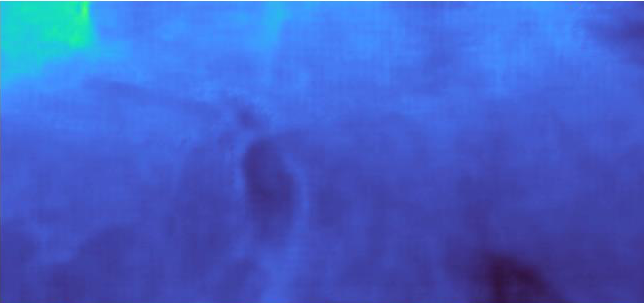
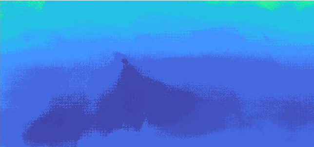
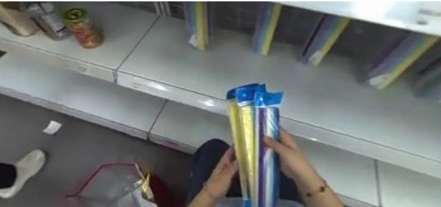
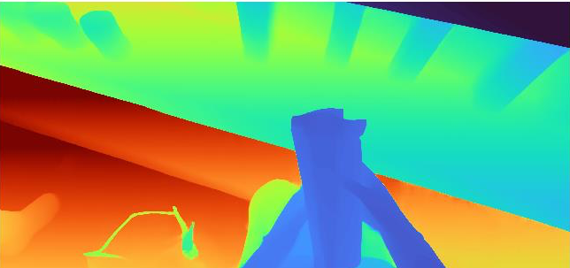
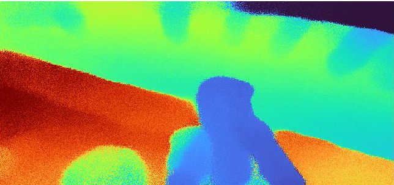
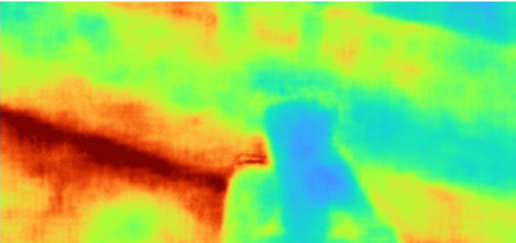
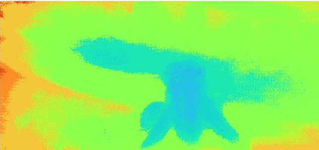
Qualitative depth comparisons. StereoVLM-2B, DepthVLM-4B, and DepthLM-13B predictions are shown alongside RGB inputs and reference depth on DROID and Xperience-10M. StereoVLM uses stereo pairs; the monocular baselines use the left image.
Learning from stereo may also build single-view depth capability. StereoVLM-2B shows some ability to estimate depth from a single image, suggesting that learning binocular geometry may also contribute to monocular depth understanding. We visualize the same checkpoint with stereo and single-view inputs across real-world scenes and an unseen environment. Paired views further improve geometric accuracy and scene detail.
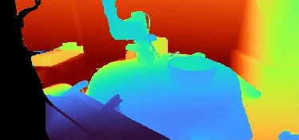
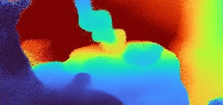
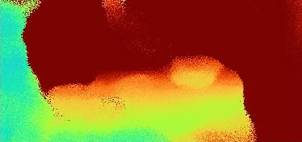
Single-view depth estimation after stereo training. Both predictions come from the same StereoVLM-2B checkpoint. Single-view results show the model’s depth estimates without the right image; stereo results show the additional geometric detail provided by paired views. RGB inputs and reference depth are shown for context.
Adding a second image alone does not establish that a model learns transferable geometry. We first compare supervision targets under matched training conditions, then intervene on the right-view input to test whether predictions depend on valid cross-view evidence. The geometry-only supervision study uses separate checkpoints from the final jointly trained StereoVLM-2B model used for the right-view interventions.
Under a matched geometry-only training setup, disparity supervision gives stronger depth generalization than direct binocular depth supervision.
Same Qwen3-VL-2B initialization, 234K stereo pairs, and optimization budget. Disparity-derived depth uses camera calibration.
Right-view interventions distinguish useful binocular evidence from simply supplying more visual tokens.
The left image is kept fixed. Only the availability or validity of the right view changes.
On unseen scenes, disparity-derived depth reaches 74.92% δ₁, compared with 45.89% for direct binocular-depth supervision under the matched geometry-only setup. This supports disparity as an intermediate representation for transferable metric-depth estimation.
With the final StereoVLM-2B checkpoint, correct stereo input gives the strongest point-depth and object-level results. Duplicating the left image or supplying an unrelated right image does not reproduce this benefit. Together, these interventions support the importance of correctly paired right-view evidence, while the single-left results show that useful prediction capability is retained without the right image.
We next evaluate whether the learned binocular representation transfers beyond stereo-specific questions. Adding stereo instructions improves all three monocular spatial benchmarks and both video benchmarks, increasing the average from 47.94 to 51.48, a gain of 3.54 points.
For embodied control, all policies use the same GR00T architecture and downstream stereo-input setting. Stereo instruction tuning raises RoboCasa manipulation success from 38.1% to 42.4%. RoboCasa is excluded from representation training in this experiment to isolate transfer.
Same GR00T policy architecture and downstream stereo inputs. 24 tasks, 50 demonstrations per task, and 50 evaluation rollouts per task.
If you find StereoVLM useful in your research, please cite our work.
@misc{stereovlm,
title = {{StereoVLM}: Binocular Vision-Language Models
for Metric 3D Spatial Reasoning},
author = {Yan, Chi and Zhao, Guoyang and Yuan, Wentao
and Ge, Yixiao and Zhou, Yanning and Xu, Dan},
year = {},
url = {}
}